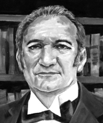

Joaquim Theotônio Segurado nasceu em Moura, Portugal, em 25 de fevereiro de 1775. Formado em Leis pela Universidade de Coimbra, foi nomeado em 1809 o primeiro ouvidor da região norte de Goiás. Fundou, em 1815, a Vila de São João da Palma (atual Paranã), que se tornou a capital da Comarca do Norte.
Líder visionário, Segurado propôs a criação de um governo autônomo para a região norte de Goiás, por razões políticas, econômicas e geográficas, liderando o primeiro movimento separatista do Tocantins em 1821. Em 1822, foi eleito deputado e viajou a Lisboa, o que contribuiu para o enfraquecimento do movimento. Afastou-se da política em 1823 e dedicou-se à vida rural e à escrita. É autor de importantes obras sobre a realidade econômica da Capitania de Goiás. Faleceu em 14 de outubro de 1831.
